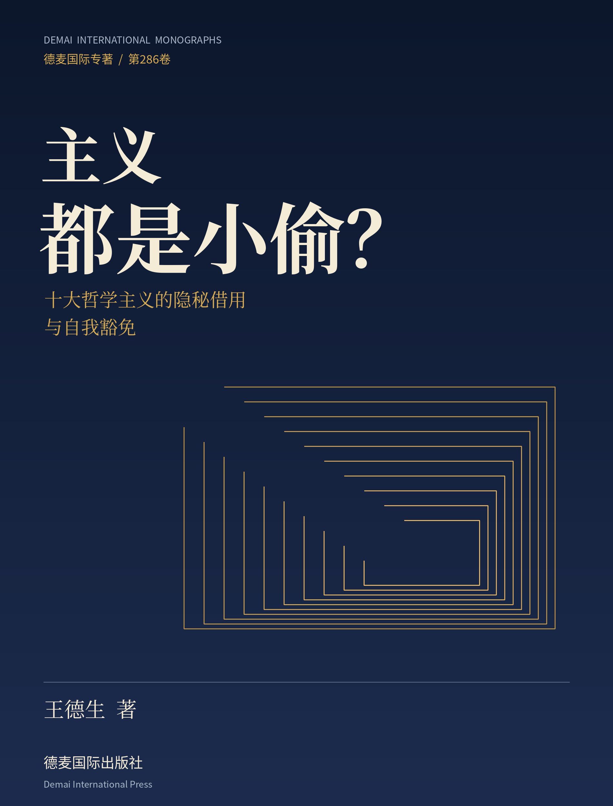
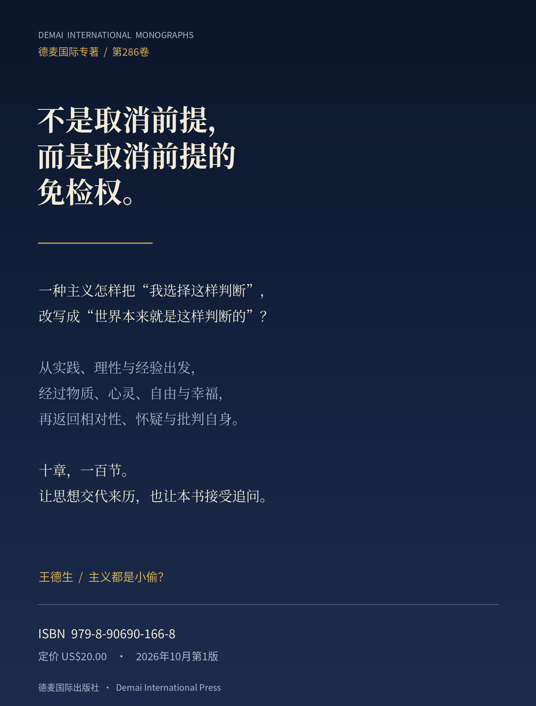

让别人的前提站上被告席以前，先让自己的前提脱下法官袍。
不是思想借鉴，而是裁判资格的转移
一种主义怎样把“我选择这样判断”，改写成“世界本来就是这样判断的”？本书从实用主义出发，沿着理性、经验、意义、物质、心灵、自由与幸福，走到相对性和怀疑，把思想的前提与其批判权限重新放回可追问的位置。
十章不是十次整齐的宣判。原典已经回答的问题、传播中失去的限制与本书提出的候选解释分别处理；那些能够使批评收窄或撤回的材料，同样保留在正文中。
从哪里开始
十种主义，十个完整入口
第一章 实用主义：谁把实践安排成了裁判？十节完整正文 · 进入长文对应位置
第二章 理性主义：理性给自己发的通行证，谁来验真？十节完整正文 · 进入长文对应位置
第三章 经验主义：经验的法庭里，谁先写好了证词格式？十节完整正文 · 进入长文对应位置
第六章 唯心主义：赶走了物质以后，谁替世界守夜？十节完整正文 · 进入长文对应位置
第七章 存在主义：反对预定本质之后，谁预定了选择者？十节完整正文 · 进入长文对应位置
第八章 功利主义：算出了最大的幸福，谁规定了什么算幸福？十节完整正文 · 进入长文对应位置
第九章 相对主义：一切都有立场，宣布这一点的人站在哪里？十节完整正文 · 进入长文对应位置
第十章 怀疑主义：怀疑了一切之后，谁让怀疑本身免于怀疑？十节完整正文 · 进入长文对应位置
作者介绍
王德生，数学与哲学研究者，SIO主客互动本体论、SDE发生学框架的提出者。研究关注知识、思想与主体能力如何在具体互动中形成，以及这些成果怎样反过来改变后续的学习、行动与协作。
他的工作把数学训练、哲学问题、教育实践与人工智能工具联系起来，从“三视角”“321智慧”逐步发展到SIO、SDE研究。在本书中，他以“主义如何取得裁判资格”为问题，尝试从原典、日常案例和发生过程三个层面，追踪思想的选择、承诺与自我修正。
本书署名为王德生。人工智能工具参与材料整理、文字协作、校核与数字版制作；工具输出不替代作者的理论判断，也不使书中候选解释自动取得经验证实的地位。
全本文件
出版信息
- 书名
- 主义都是小偷？——十大哲学主义的隐秘借用与自我豁免
- 著者
- 王德生
- 卷号
- 德麦国际专著第286卷
- ISBN
- 979-8-90690-166-8
- 定价
- US$20.00
- 版次
- 2026年10月第1版 · 数字阅读版v1.1
- 开本
- 190 × 250毫米
- 出版
- 德麦国际出版社 · Demai International Press · 新加坡
阅读与研究边界
本书的具体生活场景以思想实验为主，不冒充已完成的调查或实验。三方程、六路径和三原理作为发生关系分析框架使用，不凭形式直接取得因果证明。原典核读限于所列相关篇章，不等于所有原语种版本的逐句校勘。
查看封底
